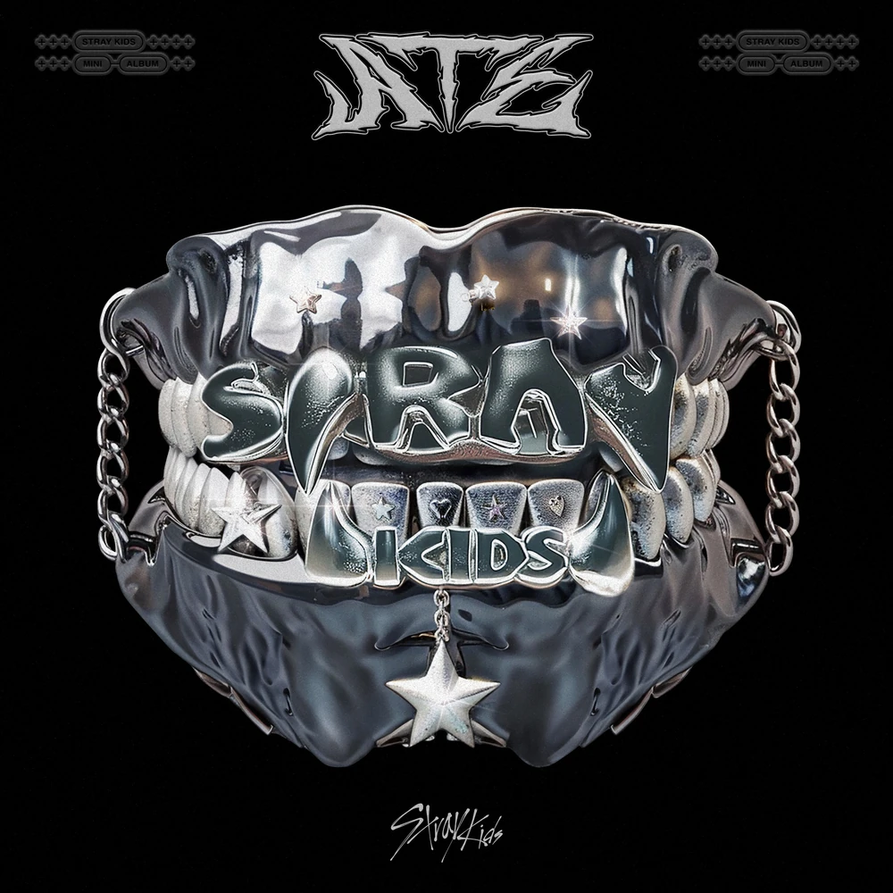
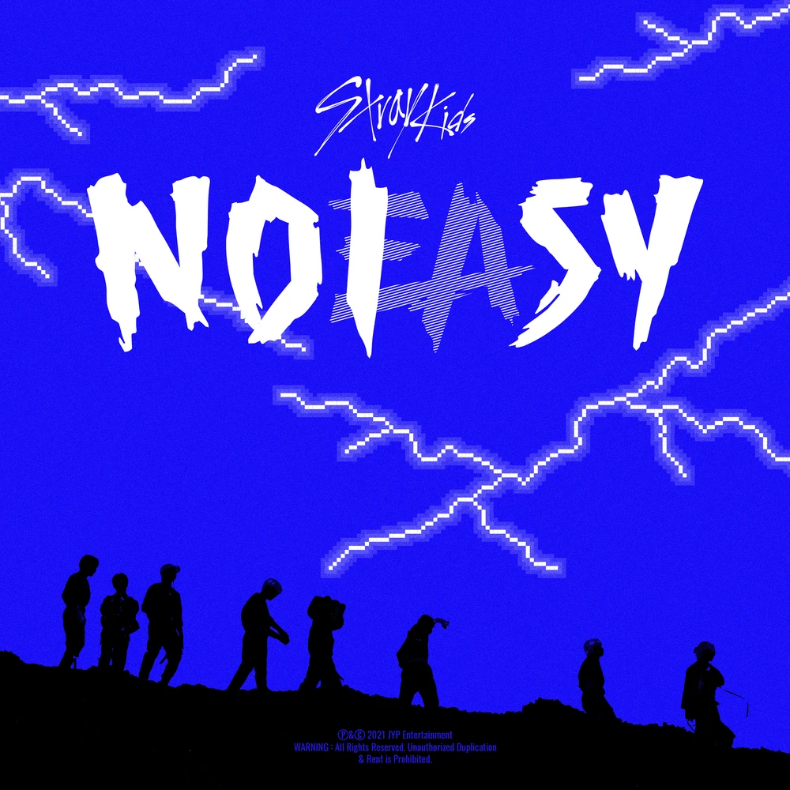

| Información | Álbumes |
|---|---|
KARMA |
 |
Do It |
|
HOP |
 |
ATE |
 |
樂-Star |
 |
★★★★★ |
 |
MAXIDENT |
|
ODDINARY |
|
NOEASY |
 |
GO 生 |
 |
Clé : LEVANTER |
 |
Clé 2 : Yellow |
 |
Clé 1 : MIROH |
|
I am YOU |
 |
I am WHO |
 |
I am NOT |
 |
Mixtape |
 |
Nombre:Stray Kids (Internacional) 스트레이 키즈 (seuteulei kijeu) en Corea.
ストレイキッズ (Sutoreikizzu) en Japón.
¿Por qué 'Stray Kids'?: Su nombre significa "Niños Perdidos", los mismos integrantes escogieron su nombre porque juntos están buscando su lugar en el mundo, luchando por todos sus sueños y metas.
Número de Integrantes: 8 chicos (6 coreanos, 1 australiano y 1 coreano-australiano)
Debut:
Corea: 25 de Marzo de 2018
Japón:18 de Marzo 2020
Fandom: "STAY"
¿Por qué STAY?: "Stay" es similar a "Stray", porque la R en medio significa "reason" (razón), entonces STAY es la razón por la que Stray Kids existe hoy.
Saludo: “Step Out. Stray Kids”.
¿Por qué?: Ellos desean romper los estándares/normas e ir paso a paso.
Agencia:
JYP Entertainment (Corea del Sur).
Republic Records (Estados Unidos).
Sub-Unidad:
3RACHA
Bang Chan (Lider, Vocalista, Rapero y Bailarín)
Lee Know (Rapero, Vocalista y Bailarín)
Chang Bin (Rapero, Vocalista y Bailarín)
Hyun Jin (Rapero, Vocalista y Bailarín)
Han (Rapero, Vocalista y Bailarín)
Felix (Rapero, Vocalista y Bailarín)
Seung min (Vocalista, Bailarín y Rapero)
I.N (Vocalista, Bailarín y Maknae)
El 11 de Septiembre de 2017, la agencia JYP Entertainment reveló el programa de
supervivencia Stray Kids, el cual buscaba formar un grupo masculino. Su emisión en
octubre contó con un formato único. "En el lugar de los aprendices supervivientes
hasta que se conviertan en un grupo, los aprendices trabajan con la meta de debutar
todos los miembros juntos, sin embargo, en el caso de fallar una misión, JYP podría
eliminarlos a ellos". Se reveló que, en su tiempo, los aprendices que la participación
eran talentosos no solo en el baile y el canto, sino también produciendo.
Ellos fueron juzgados por sus habilidades individuales y el trabajo en equipo
basado en las misiones inesperadas para ganar la competencia de supervivencia entre aprendices.
El programa no sólo mostró la preparación para las misiones, sino también
una mirada a la realidad en la vida diaria de los aprendices. El programa de
supervivencia que tiene como objetivo formar un grupo masculino en JYP Entertainment,
emitió su primer episodio el 17 de Octubre a las 11 pm KST.
El 26 de Septiembre Stray Kids reveló un video teaser para su primer sencillo
titulado "Hellevator". Más tarde, el 6 de Octubre, lanzaron su video musical completo.
El 5 de Marzo JYP Entertainment reveló un video trailer titulado "I'm NOT",
el video comienza narrando pensamientos e ideas anti-sistema, también muestra múltiples
secuencias de los integrantes en diferentes localizaciones con miradas serias. Al final
del vídeo se revela que el grupo tendrá su debut en el escaparate
"Stray Kids UNVEIL [Op.01: I Am Not]" el 25 de Marzo.
El 13 de Marzo a la medianoche Stray Kids reveló la lista de canciones de su primer
mini álbum "I Am Not": éste álbum contará con 8 pistas incluyendo la canción principal titulada "District 9".
El 21 de Marzo a la medianoche Stray Kids reveló breves clips que dan muestra de los
instrumentos y fragmentos de las letras de las pistas "¡NO!", "District 9", "Mirror"
y "Awaken". El 22 de Marzo a la medianoche, Stray Kids reveló más clips spoilers, esta
vez para las pistas "Rock", "Grow Up" y "3rd Eye".
El 23 de Marzo a la medianoche, JYP Entertainment reveló un primer video teaser para
el "District 9", el breve video muestra a ocho integrantes alineados contra la pared con
uniformes blancos, luego aparece Bang Chan con un carrito en la que trasporta una especie de máquina.
El 24 de Marzo a la medianoche, JYP Entertainment reveló un segundo video teaser para el
"District 9", el breve video muestra esta vez un breve corte de la coreografía y del estribillo
de su pista principal, "District 9".
El 25 de Marzo, Stray Kids realizó su debut con su primer mini álbum "I'm NOT" y el MV
para "District 9" un día después de su lanzamiento, el video musical del "District 9"
obtuvo 4,274,649 reproducciones en YouTube. Este es un nuevo disco por el mayor número
de reproducciones que el video musical de debut de un grupo de K-pop ha logrado en las
primeras 24 horas.
El 27 de Marzo, Stray Kids se posicionó en la cima de las listas en iTunes en 10 países:
Argentina, Canadá, Chile, Finlandia, Indonesia, Malasia, Perú, Singapur, Taiwán y Tailandia.
El 31 de Marzo, Stray Kids reveló un video musical para "Grow Up", "Grow Up" es una
b-side del álbum "I Am NOT". La canción tiene una letra que da valor para no dejar de intentar conseguir tus sueños.